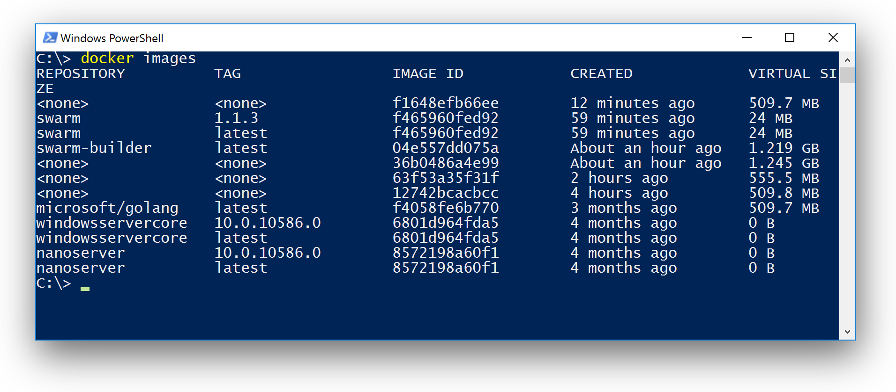

In my last blog post I showed how to run a Windows Docker Swarm. That tutorial just used a prebuilt Swarm Docker image that was loaded from local disk.
Some people asked me how I have built that container image. Assuming you have a Windows Server 2016 TP4 machine you nowadays need nothing more than the right Dockerfiles to do this.
So let's start writing a Dockerfile to build Docker Swarm inside a Docker container. For the next steps open a PowerShell window and then open an editor.
notepad Dockerfile.builder
Use a base image
Swarm is written in Go, so we look for a useful base image. And there already is one useful base image in the Docker Hub. So we begin the Dockerfile with the following line.
FROM microsoft/golang
Install Git
Additionally to Go we also need Git installed inside the Container image. So we use the following lines that will download and install Git for Windows and then remove the installer again. As a further step we add Git to the PATH variable.
ENV GIT_VERSION 2.7.2
RUN powershell -Command \
Sleep 2 ; \
wget https://github.com/git-for-windows/git/releases/download/v%GIT_VERSION%.windows.1/Git-%GIT_VERSION%-64-bit.exe -outfile gitinstaller.exe ; \
Start-Process .\gitinstaller.exe -ArgumentList '/VERYSILENT /SUPPRESSMSGBOXES /CLOSEAPPLICATIONS /DIR=c:\git' -Wait ; \
rm .\gitinstaller.exe
RUN setx PATH %PATH%;C:\git\cmd;C:\git\bin;C:\git\usr\bin
Install and build Godep and Swarm
The Swarm project uses Godep to manage the dependencies. We also need this tool as well as the Swarm sources. So let's install both and run the godep tool to build the swarm.exe.
ENV SWARM_VERSION v1.1.3
ENV GOPATH C:/go
WORKDIR /go
RUN powershell -Command \
Sleep 2 ; \
go get github.com/tools/godep ; \
mkdir src\github.com\docker ; \
cd src\github.com\docker ; \
git clone https://github.com/docker/swarm ; \
cd swarm ; \
git checkout %SWARM_VERSION% ; \
Start-Process -FilePath godep.exe -ArgumentList go, install, . -Wait
Now save the Dockerfile.builder file and close the editor.
Back in the PowerShell build the Docker image with the name swarm-builder and the given Dockerfile with the following command.
docker build -t swarm-builder -f Dockerfile.builder .
This now creates a Docker image with multiple layers, for each ENV and RUN command in the Dockerfile. You can see the actions on your screen and finally the command finishes and you can list your images with
docker images
You should see a image with the name swarm-builder:
REPOSITORY TAG IMAGE ID CREATED VIRTUAL SIZE
swarm-builder latest 04e557dd075a 31 minutes ago 1.219 GB
The size of the Docker image is not good for deployment as we have all the development tools and source codes inside it.
Test and extract the swarm.exe
We only need the swarm.exe from this image as it is a static binary. So we just run the Docker image and have a very little test of the binary just created by showing its version.
After that we copy the swarm.exe from the container back to the host.
docker run --name swarm-builder swarm-builder swarm --version
docker cp swarm-builder:/go/bin/swarm.exe ./swarm.exe
Build a small Swarm image
The final Docker image for deployment can be produced with a much simpler Dockerfile. As the time of writing the Technical Preview 4 needs a small workaround to access the network inside a container. We have to add a small helper script for now.
nodepad run.ps1
The small PowerShell script just sleeps a little and then calls swarm.exe with the arguments given.
Sleep 2
\swarm.exe $args
Now it is time to write the Dockerfile. So open an editor with the following command. Notice the dot '.' as this helps Notepad create a Dockerfile without an extension.
notepad Dockerfile.
The Dockerfile now uses the windowsservercore base image and copies the helper script and the swarm binary into the image and sets the entrypoint.
FROM windowsservercore
COPY ./swarm.exe /swarm.exe
COPY ./run.ps1 /run.ps1
ENV SWARM_HOST :2375
ENTRYPOINT ["powershell.exe", "-File", "/run.ps1"]
CMD ["--help"]
We now build the final Docker image with
docker build -t swarm .
Just check the size of the Docker images again with
docker images

If you build a new version of the Swarm image later it is useful to tag each Docker image with its version. For this tutorial we have built Swarm 1.1.3, so we tag it with
docker tag swarm:latest swarm:1.1.3
You now can run a Swarm container eg. with
docker run -it swarm:1.1.3 --version
and you will see the version of the swarm.exe.
Automate all the things
Both the Dockerfiles and a build script can be found in my dockerfiles-windows GitHub repo. Even to download the sources you do not need more than a PowerShell window. Just download it as a ZIP and extract it:
wget -outfile src.zip https://github.com/StefanScherer/dockerfiles-windows/archive/master.zip
Expand-Archive .\dockerfiles-windows.zip
The steps to build both the development Docker image as well the final image is added to a small build script which can be run with this commands
cd src\dockerfiles-windows-master\swarm
.\build.bat
TL/DR
Even on Windows you now can put development environments into Docker images and build small images for deployment with a two step approach. No special setup is needed on your host machine, just Docker should be reachable.
Everything is reproducable on every team members machines. And a CI build pipeline can take advantage of this dockerized setup as well.
I hope you get a feeling what you can do with your own software project and start dockerizing as well.
If you find this blog post useful, just share it with your friends and colleages. Please leave a comment if you have questions or improvements. You can follow me on Twitter @stefscherer.